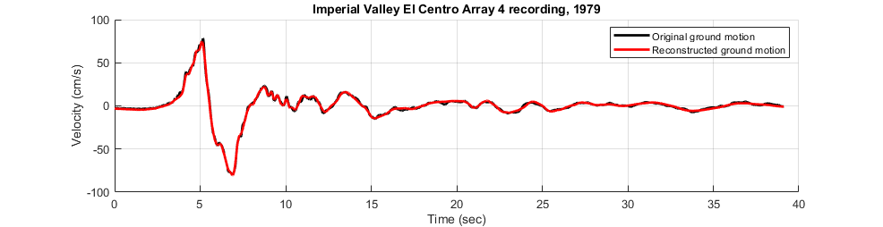
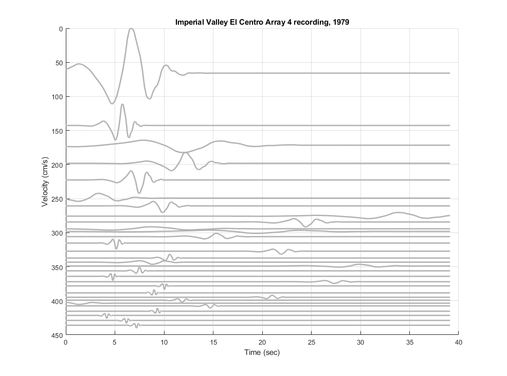

verification Pulse Decomposition of OpenSeismoMatlab
Contents
Reference
Shahi, S. K., & Baker, J. W. (2014). An efficient algorithm to identify strong‐velocity pulses in multicomponent ground motions. Bulletin of the Seismological Society of America, 104(5), 2456-2466.
Description
The velocity pulses of a strong motion velocity time history are extracted according to Figure 3 of the above reference, and the extracted pulses are summed to give the reconstructed ground motion. There is significant agreement between the original and the reconstructed ground motions. The velocity time history of the 1979 Imperial Valley El Centro Array 4 recording is considered. The Daubechies wavelet of order 4 is used as the mother wavelet.
Earthquake motion
Load earthquake data of 1979 Imperial Valley El Centro Array 4 recording
eqmotion={'ImperialValleyElCentroArray4.txt'};
data=load(eqmotion{1});
t=data(:,1);
dt=t(2)-t(1);
xgt=data(:,2);
Perform pulse decomposition of earthquake motion
Switch
sw='pulsedecomp';
Wavelet family of Daubechies wavelet of order 4
wname = 'db4';
Apply OpenSeismoMatlab for extracting the first 30 largest pulses from the initial motion
S1=OpenSeismoMatlab(dt,xgt,sw,wname);
Sout{1}=S1;
for i=2:30
S1=OpenSeismoMatlab(dt,S1.resTH,sw,wname);
Sout{i}=S1;
end
Sum the 30 largest pulses extracted from the input motion
sum30=zeros(size(S1.pulseTH)); for i=1:30 sum30=sum30+Sout{i}.pulseTH; end
Plot the velocity time histories (original and reconstructed)
Initialize figure
figure('Position',[7.4,508.2,1517.6,253.8],... 'InnerPosition',[7.4,508.2,1517.6,253.8],... 'OuterPosition',[0.2,501,1000,343.2]) hold on % Plot the velocity time history of the original ground motion plot(t,xgt, 'Color', [0 0 0], 'LineWidth', 2) % Plot the velocity time history of the reconstructed ground motion plot(t,sum30, 'Color', [1 0 0], 'LineWidth', 2) % Finalize figure hold off grid on title('Imperial Valley El Centro Array 4 recording, 1979') ylim([-100,100]) xlim([0,40]) xlabel('Time (sec)') ylabel('Velocity (cm/s)') legend({'Original ground motion','Reconstructed ground motion'}) drawnow; pause(0.1)
Plot the 30 velocity pulses in a single plot
Verify with the middle plot of Figure 3 Initialize figure
figure('Position',[5 50.6 1524.8 731.2],... 'InnerPosition',[5 50.6 1524.8 731.2],... 'OuterPosition',[-2.20 43.4 1000 820.8]) hold on offSet=0; for i=1:30 offSet=offSet+abs(min(Sout{i}.pulseTH)); plot(t,offSet+Sout{i}.pulseTH, 'Color', [0.7 0.7 0.7], 'LineWidth', 2) offSet=offSet+max(Sout{i}.pulseTH); end % Finalize figure hold off grid on title('Imperial Valley El Centro Array 4 recording, 1979') ylim([0,450]) set(gca, 'YDir','reverse') xlim([0,40]) xlabel('Time (sec)') ylabel('Velocity (cm/s)') drawnow; pause(0.1)
Copyright
Copyright (c) 2018-2023 by George Papazafeiropoulos
- Major, Infrastructure Engineer, Hellenic Air Force
- Civil Engineer, M.Sc., Ph.D.
- Email: gpapazafeiropoulos@yahoo.gr